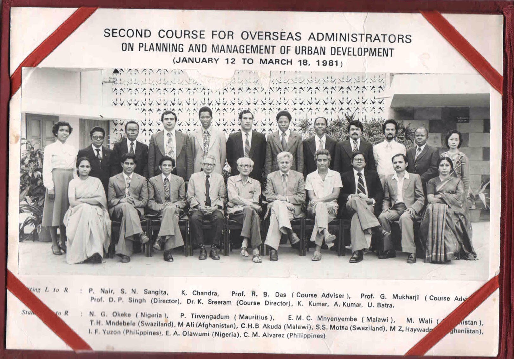
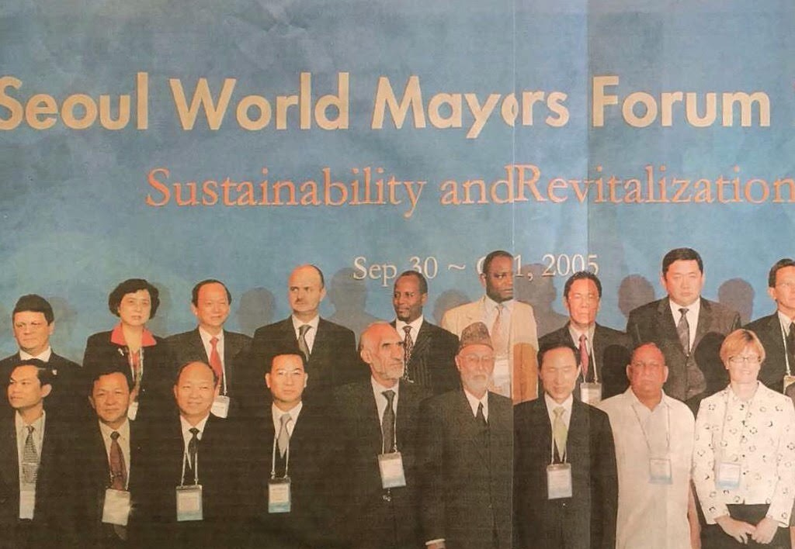
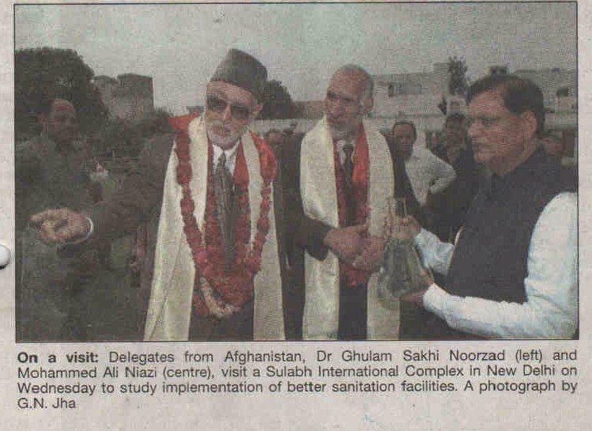

Pages:
Home PageContact Us
Phone: 078-6511516 OR 020-2230066
Email: niaziali.consultancy@gmail.com
Address: Taimany Project/ Opposite to Salim Carvan Plaza,
Street 4,District 4, Kabul, Afghanistan
|
|
|
|
|
|
Niazi Consultancy and IP Services registers trademarks for companies across the world in Afghanistan. These services help provide safety to the logos and labels of the companies and help keep them protected in Afghanistan as they have been registered by Niazi consultancy and IP Services. This is done in a trustworthy manner and approved by court and the law. Niazi Consultancy and IP Services is always available to be working with companies and provide them with services. Niazi Consultancy and IP Services have been providing such services since 1992 and have much knowledge and experience needed for this business.
Niazi Consultancy and IP services previously worked with Nassir Massoun in Niazi and Massoun consultancy and IP services. However, since April 2017 this consultancy and IP service provider has partitioned into two individual companies; Massoun Consultancy and IP Services and Niazi Consultancy and IP services. As of now and thereafter, Niazi Consultancy and IP Services will be working independently under the new license number 38724. Our company has a long history and experience with filing trademarks and we would use these skills to provide quick, professional and satisfactory services to our clients. We are ready to receive your new trademark orders regarding registrations, renewals and changes of trademarks.
Aside from running the Niazi and Massoun Consultancy and IP Services, Niazi has employed in many different sectors of Kabul Municipality. In 1976, he employed as the General Director in many different fields of the Kabul Municipality of Afghanistan. In the year 1980, after completing a Planning and Management program in India, he returned to Afghanistan and held the post of General Director of Foreign relations. In 1983, he published a book called Kabul Guide for the betterment of social services and facilities. In the later years, he held the position of Head of Policy and Coordination department, Head of Municipal Properties department, Head of District 6 of Kabul city and then Head of district 5 of Kabul city. During this time due to work related travels, Niazi had professional visits to several countries such as the United States, France, Denmark, Spain, Italy, Netherlands, South Korea, Egypt, Turkey, India, and Iran and met with the mayors of the capital cities of these countries.
 From 1992 to 2017 Niazi and Massoun Consultancy and IP services worked in building on the trademarks and developing the company. Since 1992 Massoun had the role of collecting the trademarks ordered by companies and Niazi had the role of completing all the other aspects of the orders including the registration of trademarks, starting the application and completing the process which was followed by the completion of the certificates for the trademarks. Hence all the received Power of Attorney documents were under the name Mohammad Ali Niazi.
